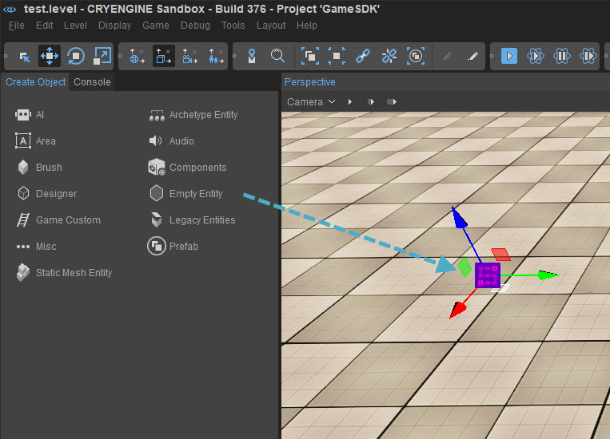
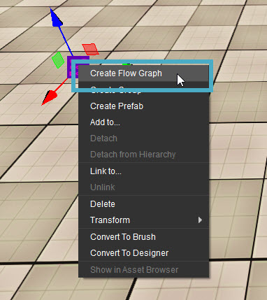
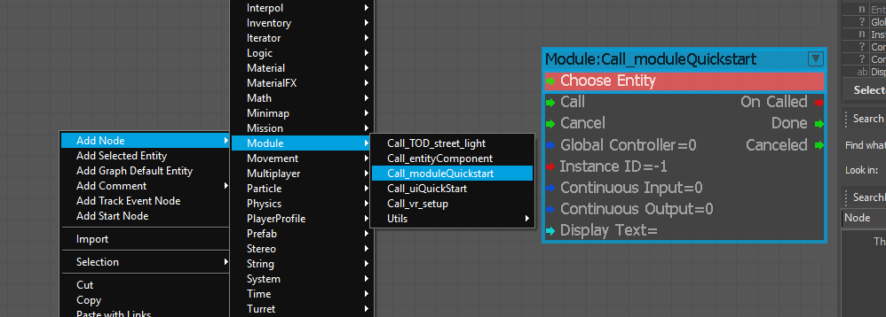
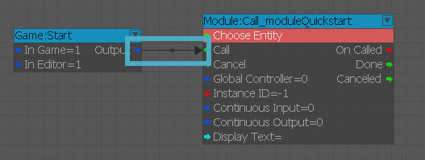
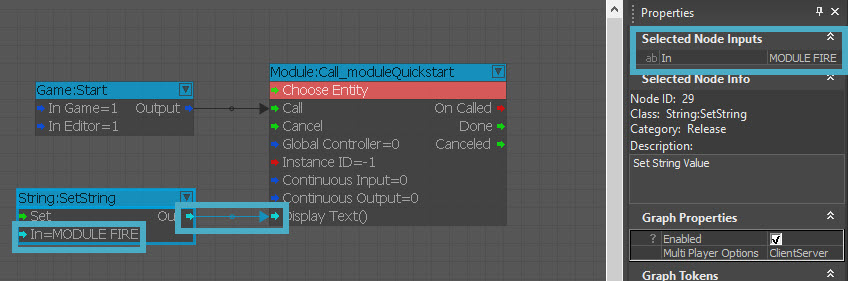
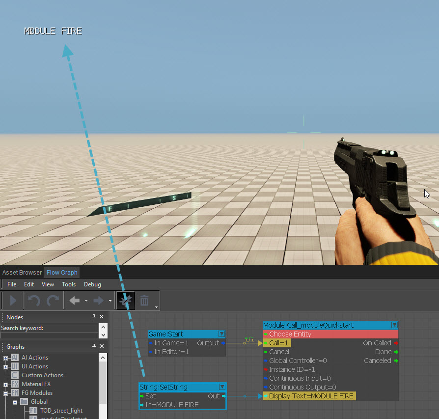

Как предоставить функциональность модуля другим графикам?
В предыдущей главе 7 - Модули Flow Graph мы создали модуль, который позволил нам подключить строку к входным портам модуля. В этой главе мы увидим, насколько легко настроить предоставленный нам строковый порт и вывести его на экран, чтобы мы знали, что он работает за счет модульного графа.
Вызов вашего модуля Flow Graph
Выполните следующие шаги, чтобы вызвать модуль Flow Graph в вашей сцене:
- Перейти к Создать объект -> Пустой объект и перетащите его на сцену.
- Щелкните правой кнопкой мыши новый объект и выберите Создать Flow Graph. Нмне это нравится moduleQuickstart чтобы соответствовать предыдущему модулю FG.
- Щелкните правой кнопкой мыши, чтобы увидеть дерево узлов, и перейдите к Добавить узел -> Модуль -> Call_moduleQuickstart.
- Теперь, когда модуль находится в нашем графике уровней, мы можем добавить Игра:Начать узел к Позвонить входной порт узла «Модуль».
- Наконец, мы хотим создать Строка: SetString узел к нашему заказу displayText Входной порт в модуле. Для сообщения внутри узла String нам нужно ввести «MODULE FIRED», чтобы знать, что модуль выполнил вызов.
Шаг 1

Шаг 2

Шаг 3

Шаг 4

Шаг 5.1

Шаг 5.2

Заключение
Несмотря на то, что это руководство завершено, не стесняйтесь идти по своему собственному пути разработки, основываясь на том, что мы рассмотрели в предыдущих главах. Для получения информации по темам, рассматриваемым в этом руководстве, и многому другому., пожалуйста, обратитесь к Руководство CRYENGINE V.